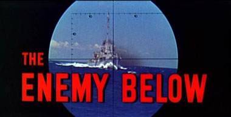
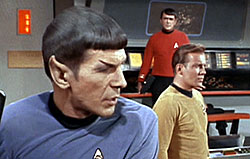
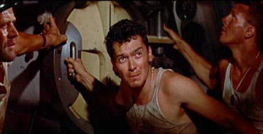
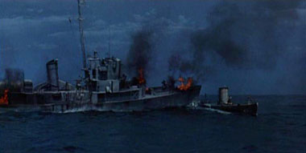
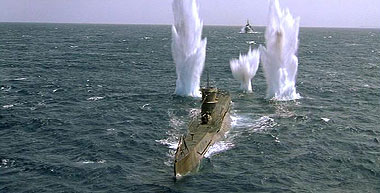

Mais um pequeno salto no tempo para o ano de 1957, e chegamos
ao vencedor do Oscar de efeitos especiais daquele ano, The Enemy Below. No elenco esto Robert Mitchum (capitão
Murrell), Curd Jrgens (Von Stolberg) e David Hedison (tenente comandante Ware),
mais conhecido do pblico por seu personagem capitão Lee B. Crane, do clssico
seriado "Voyage to the Bottom of the Sea",
ou, Viagem ao Fundo do Mar. O filme narra a caada
de um U-Boat pelo destrier americano USS Haynes nos mares do Atlntico Sul durante
a Segunda Guerra Mundial.

O Filme
Devido ao grande nmero de referncias cruzadas, adotaremos
aqui uma estratgia diferente da dispensada a Silent Run, Silent Deep. Faremos uma corrida pela sinopse de The Enemy Below, e tratando pontualmente
as coincidncias identificadas com Balance of Terror.
frente, dois teros.
Robert Mitchum interpreta o capitão Murrell, comandante
do destrier americano USS Haynes, em patrulha de rotina no Atlntico Sul durante
a 2ª Guerra Mundial. Murrel era um marinheiro civil que viu sua esposa morrer
quando o navio em que estavam viajando (um cargueiro) foi torpedeado por um submarino
alemo.
O USS Haynes conta com uma tripulao inexperiente em sua maior
parte, e que por estar em uma rea longe da linha de frente no espera entrar
em combate. Entretanto,
o navio faz um inesperado contato atravs do radar. Ao seguir o contato, eles
descobrem se tratar de um U-Boat, e comea ento a caada ao submarino, que est
sob comando do competente e experiente comandante Von Stolberg (Curt Jurgens),
veterano da primeira guerra e desiludido com os propsitos polticos da segunda.
The Enemy x Balance
Quando o Haynes faz o primeiro contato do radar indica uma
presena que ainda no pode ser confirmada como um submarino. Murrell ento ordena
que o navio permanea na mesma velocidade do alvo e se mantenha no limite do alcance
do radar.

(Em "Balance of Terror", aps o ataque ao posto 4, Spock consegue
detectar a posio da nave inimiga apenas pelos sensores de movimento. Kirk ordena
um curso paralelo, igualando distncia e velocidade da Ave de Guerra Romulana
mas sem se aproximar da nave inimiga.)
A bordo do submarino, que navega na superfcie, Von Stolberg
tambm recebe de seu operador da estao a informao de um contato, este acredita
que possa ser apenas um eco. Desconfiado, Stolberg executa duas mudanas de curso
a fim de verificar se o sinal os seguiria. Do outro lado, Murrell antecipa esta
estratgia e mantm o Haynes no curso original, e o U-Boat acaba retornando ao
curso anterior, 140.
(Embora o comandante Romulano interpretado por Mark Lenard
no execute nenhuma manobra para tentar identificar a Enterprise, a concluso
de que o sinal possivelmente um eco do radar a mesma, e igualmente toma
a deciso de retomar o curso inicial em direo a Rmulos, 111
marco 14.)
Murrell coloca o Haynes de volta ao encalo do submarino e
ordena que, a qualquer mudana de curso do submarino, o leme mantenha a mesma
estratgia. Ele pretende encontrar o suposto submarino apenas ao amanhecer. Aps
passar as instrues ao pessoal de servio, ele informa a toda tripulao o que
esta acontecendo, e retorna sua cabine.
(Kirk tambm informa sua tripulao sobre o que esta por
vir pelos alto falantes da nave, procedimento pouco usual em Jornada, embora possa
ser justificvel pelos aspectos nicos da misso na qual esto para se engajar.)
A bordo do U-Boat, Stolberg ainda desconfiado chama o encarregado
da viglia do turno, o tenente Kunz, e manda que o mesmo execute dois zigue-zagues
a cada hora e mantenha-se de olhos abertos caso o eco se aproxime. Neste ponto
Stolberg se retira do comando para sua cabine, mas chama com ele seu primeiro
oficial, 'Heinie' Schwaffer (Theodore Bikel). L eles tem uma breve conversa que comea com uma reclamao do
capitão a respeito da exagerada dedicao do tenente Kunz hierarquia
e ao regime.
(O personagem Kunz similar em alguns pontos a Decius. Ambos
so jovens, tem orgulho de sua ptria e seus lideres, o Fhrer no caso de Kunz,
e o pretor no caso de Decius, embora o alemo tenha sido tratado de forma um pouco
mais caricata em "The
Enemy Below". Na novela original, esta relao entre Kunz
e Von Stolberg muito mais tensa. Kunz mostrado aqui como o defensor do regime,
tal qual o jovem centurio a bordo da nave romulana)
Existe ainda no discurso de Stolberg uma frustrao em respeito
ao regime e nova Alemanha de Hitler, e por extenso, s motivaes para a guerra
e falta de esperana quanto ao seu desfecho.
(Da mesma forma que Stolberg e Schwaffer,
Mark Lenard tambm tem uma conversa similar com o seu primeiro oficial a bordo
da nave romulana. Igualmente estes ltimos tambm so velhos companheiros de outras
campanhas, servindo juntos h muito tempo. Lenard mostra a mesma frustrao com
o resultado da misso, que certamente levar o Imprio a uma nova Guerra. O centurio
parece perturbado com o comentrio de seu oficial comandante e lhe diz que com
freqncia no consegue entend-lo.)
O
mesmo comentrio feito por
Schwaffer em relao a Stolberg numa situao em tudo similar ao
segmento clssico. Ainda
sobre a conversa de Stolberg e Schwaffer, o comandante alemo tambm faz suas
ressalvas mecanizao da guerra, o que remete a um outro episdio da Srie
Clssica, junto com outra passagem que veremos a seguir. De qualquer forma,
esta seria uma das bandeiras
da série original de Jornada quando esta veio a ocupar as telas de TV.)
Stolberg tambm revela (para a audincia) nesta conversa que
o submarino alemo est de posse de um livro de cdigos ingls, e que tem um encontro
com um navio de assalto alemo em 48 horas, quando tal carga ser transferida
e eles podero finalmente voltar para casa. Ficamos sabendo tambm que Stolberg
tem uma histria trgica na guerra, pois perdeu seus dois filhos, ambos mortos
em combate, o que acrescenta elementos ao personagem.
(Tal revelao
adiciona ao filme um necessrio senso de urgncia e um motivo para o submarino
retornar sempre ao seu curso original, como ser visto ao longo do filme. Em The Balance... a urgncia dada pela proximidade da Zona
Neutra. preciso tomar uma deciso antes que a Ave de Guerra atravesse a fronteira.
A histria trgica fica por conta de Stilles, com vrios antepassados perdidas
na Guerra Terra- Rmulos.)
De volta ao Haynes, Murrell est acordado no convs, e aps
conversar com o responsvel pelas equipes de lanamento das cargas de profundidade
sobre a necessidade de melhorar o tempo de recarga, ele tem uma conversa com o
mdico de bordo, o Doutor (cujo personagem no tem nome creditado, mas foi interpretado
por Russell Collins) um boa praa, ex-pediatra e
acima de tudo, um otimista. A conversa gira em torno do provvel submarino inimigo,
e sobre a mudana que a guerra trouxe s suas vidas, inclusive sobre a morte de
sua esposa.
(O teor da conversa entre Murrel e o Doutor bem diferente do dilogo
famoso entre Kirk e McCoy, mas curioso embora esperado no universo da Srie
Clssica que
sejam os dois mdicos de bordo os conselheiros de seus capites, e que tenham
personalidades to similares. Embora McCoy seja muito mais passional, ambos so
assumidos defensores da esperana,e da vida. E o discurso embora menos apaixonado, ainda otimista do Doutor lembra
em muito a defesa da vida que virou uma bandeira de McCoy. Nesta conversa, Murrell comenta em outras palavras que, na
verdade, no um inimigo, apenas o mal faz parte do homem, e sempre retorna quando
menos se espera. Murrel tambm comenta que, apesar do sentimento de perda da esposa,
no pensa naquela misso como sua guerra particular, mas apenas como seu trabalho.
Este comentrio, junto com o comentrio anterior de Von Stolberg sobre a mecanizao
bem podem ter sido a inspirao para A Taste
of Armageddon, outro segmento clssico.)
Às 5h30 da manh, conforme ordenado, o navio entra em prontido
de batalha. Murrell envia uma mensagem informando o contato e que pretende entrar
em combate com o submarino, e ento ordena velocidade total em direo ao inimigo.
Eles finalmente avistam o submarino, mas este submerge antes de estar ao alcance
das armas dos canhes.
Murrell coloca o Haynes na linha de tiro dos torpedos de r
do submarino, esperando que estes sejam usados contra o destrier e deixando a
popa desprotegida, uma vez que estes torpedos no podem ser recarregados. A estratgia
d certo. O Haynes muda de posio bem a tempo de evitar os torpedos do inimigo
e se aproxima para o combate a toda velocidade, usando o sonar para tentar localizar
o U-Boat. Murrell mantm o Haynes sempre popa do submarino.

Enquanto isto, o comandante alemo descobre que errou o alvo,
e se prepara para o bombardeio de cargas de profundidade, e elas vm. Aps a primeira
salva, o submarino tenta uma manobra de despiste, liberando leo no mar, e revertendo
o curso, o que faz com o Haynes perca o contato. Murrell aposta que o U-Boat retornara
ao curso 140 e, marca um curso de interceptao baseado nesta aposta.
(A estratgia diferente, mas o resultado em The Balance... similar.
A Enterprise avana tentando usar a proteo de um cometa para um ataque surpresa,
mas os romulanos descobrem e na ltima hora mudam o curso. Mesmo assim, Kirk ordena
um ataque s cegas, com os fasers em salva. O que nos leva a
outra convenincia do segmento: o disparo das armas. Anteriormente, j havamos
assistido Enterprise disparar seus fasers em The Corbomite Maneuver e nada
do que vimos l igual ao que acontece em Balance of Terror.)
(Aqui, o episdio adaptado para se moldar ao mesmo tipo de
cenrio que vemos em The Enemy.... Da mesma forma que so
dadas ordens para que as cargas de profundidade sejam lanadas do Haynes, a bordo
da Enterprise necessrio ordenar que a seo de armamentos da nave estelar abra
fogo, um fato que no mais se repetiria ao longo da srie. Da por diante, os disparos
voltariam a ser controlados pelo console normalmente usado por Sulu. J especulamos
antes que provavelmente tal estratgia foi utilizada exclusivamente em Balance of
Terror, para que Spock pudesse salvar Stiles
e a prpria Enterprise mais tarde.)
(Neste
episdio, apesar de ordens para o fogo dos feisers serem dadas, os efeitos pticos
mostrados so os dos torpedos fotnicos. Alm disto, neste segmento existe uma
forma de configurar os faisers para um tipo de detonao por proximidade, exatamente
como uma carga de profundidade. Em "Arena", os torpedos
fotnicos seriam inaugurados e nunca mais voltaramos a ver esta configurao
de fasers novamente.)
Aps visitar um tripulante que perdeu os dedos ao deixar a
mo no trilho de lanamento das cargas, Murrell recebe uma mensagem do comando
naval, informando que trs destrieres esto a caminho para ajudar o Haynes, entretanto,
s chegaro em 14 horas. Ele decide junto com seu primeiro oficial a manter o
ataque previsto, imaginando que o submarino retornar ao curso 140. A estratgia de Murrel
d certo, e eles cruzam com o submarino alemo novamente,
e iniciam nova bateria de cargas de profundidade.
Stolberg ordena a liberao de leo mais uma vez, e ento leva
o seu U-Boat para o fundo do oceano, apesar de risco de ruptura do casco. Eles
chegam ao fundo (310m)
o mais uma vez o Haynes perde o contato com o submarino. Murrell manda os motores
descerem de rotao at uma parada total, e silncio total no navio. Comea ento
um jogo de pacincia entre as tripulaes das duas embarcaes, que enfrentaro
uma longa espera pelo prximo movimento do adversrio.
Depois de horas, Stolberg decide deixar o fundo, apesar de
suspeitar que o Haynes est espera. Ele est certo e, assim que suas mquinas
comeam a trabalhar, eles so localizados novamente e o destrier reinicia a caada.
[(Citao de Von Stolberg quando ele pe
o submarino em movimento aps horas de espera no fundo do mar em silncio, tentando
despistar os americanos:
He is a Devil,
Heini
(Ele um demnio, Heini.)
Citao do comandante Romulano, quando manda a Ave
de Guerra se aproximar da Enterprise aps horas de espera no espao, em silncio,
tentando captar um sinal que desse a sua posio.
He's a sorcerer,
that one. He reads the thoughts in my brain
( um feiticeiro. Ele l os pensamentos em meu crebro.)]
Apesar disto, Murrell est ciente de que no pode expor demais
o seu navio, o que daria a vantagem ao U-Boat, sendo assim ela monta
um plano de reteno, que consiste em avanar, lanar uma salva de cargas, e depois
retroceder para fora do alcance do submarino. Eles faro isto a cada hora, durante
sete horas, na tentativa de atrasar o sub at que cheguem os reforos.
O plano iniciado e parece funcionar bem. Os ataques, embora
no causem danos srios ao U- boat, levam a tripulao ao pico de estresse. Aps
um dos tripulantes perder o controle e tentar abrir uma
escotilha, o que logicamente inundaria o barco, Von Stolberg decide sair da defensiva.
Aps analisar o movimento de aproximao, ataque e retirada do Haynes, ele monta
um plano para atacar o destrier americano em sua prxima passagem.
Stolberg tem sucesso. Lanando uma salva com os quatro torpedos
de proa simultaneamente, ele consegue atingir o navio americano com uns projteis,
inutilizando as caldeiras. O navio no explode, mas est irremediavelmente perdido.
Murrell d a ordem de abandonar o navio, mas ainda guarda um ultimo lance. Ele
manda a tripulao queimar o que for possvel no convs, dando a impresso que
o navio est em chamas. Stolberg
v o fogo pelo periscpio e imagina que o destrier esta incapacitado, e emerge
para dar o tiro de misericrdia.

Aps emergir, Stolberg sinaliza ao Haynes que eles tm cinco
minutos para abandonar o navio, mas subitamente v o Haynes iniciar uma corrida
em sua direo, usando o vapor que sobrou nos boilers. Sem tempo para submergir
novamente o U-Boat literalmente atropelado pelo destrier.
(Esta seqncia guarda alguma semelhana com a tentativa romulana de incapacitar
a Enterprise usando uma ogiva nuclear. Aps a exploso, Kirk se faz de morto e
espera uma ao romulana, e quando estes comeam a se mover para aniquilar a Enterprise,
esta abre fogo, incapacitando a Ave de Rapina. O que acontece em diante, todos
j sabem.)
Com ambas embarcaes condenadas, as tripulaes comeam a
abandon-las. Stolberg, que havia dado ordens de acionar bombas de autodestruio
a bordo do submarino, volta para o interior do barco quando percebe que seu primeiro
oficial no saiu do submarino. Stolberg encontra Schwaffer e consegue tir-lo
do submarino, mas ambos esto encurralados pelas chamas no convs.
Murrell, que est para abandonar o Haynes, percebe que ambos
os oficiais alemes iro morrer, por isto volta e lana uma corda para Stolberg.
Eles sobem at o Haynes e do a volta para o outro lado do navio, onde no h
fogo. Neste meio tempo, o comandante Ware, a bordo de um dos barcos salva-vidas
(que j tem a bordo alguns membros da tripulao do U-Boat) percebe que Murrell
ainda est a bordo e retorna ao Haynes. Com ajuda de ambas as tripulaes, Murrell,
Stolberg e Schwaffer so retirados do navio em chamas antes do submarino alemo
explodir.
Schwaffer no sobrevive aos ferimentos, e sepultado no mar,
aps ambas as tripulaes serem recolhidas por um dos navios americanos que haviam
partido para ajudar o Haynes. Aps o funeral, que conta com a participao de
membros das tripulaes americana e alem, Murrell e Stolberg conversam brevemente
no passadio da embarcao, como se fossem velhos conhecidos,
e o filme chega ao fim.
Emergindo
O fim de ambos os filmes radicalmente diferente, e cada um
deles, serve a seu propsito, mas a rota traada por ambos os roteiros por vezes
similar at em
excesso. Plgio ? Pelo menos para o autor deste artigo, de forma
alguma. Paul Schneider e Gene Roddenberry certamente beberam da mesma fonte dos
dois filmes citados para criar um dos clssicos absolutos de Jornada.
Se as semelhanas so fortes, as diferenas so importantes.
Em primeiro lugar, o cenrio que cerca os eventos de "Balance..."
est muito mais sintonizado com o cenrio da guerra fria entre URSS e EUA, e no
h um conflito declarado entre as potncias, sendo assim, as aes de Kirk podem
colocar todo o quadrante em uma sangrenta guerra, o que d aos eventos uma importncia
ainda maior, alm da questo do preconceito ganhar maior destaque.
Mas no perderemos tempo falando das qualidades de Balance
of Terror o que j foi feito
em outras ocasies, mas apenas lembrar o que disse Machado de Assis:o desenvolvimento
da originalidade possui algumas etapas, a primeira das quais imitar os modelos
clssicos, e a ltima... imitar-se a si mesmo at a morte!
Sobre The Enemy Below
e "Run Silent, Run Deep", o autor os considera
itens fundamentais na coleo de qualquer um que goste de clssicos filmes de
guerra naval, e mais, dos cones eternos do cinema. "Run Silent, Run Deep" Clark
Gable e Burt Lancaster em seu melhor, o que por si s j um convite a uma sesso
de cinema com muita pipoca. Mas ateno, esta sesso para cinfilos, pois nunca
pouco lembrar que este filme ainda em preto e branco. Decepo para alguns,
deleite para outros.
The Enemy Below apesar de mais antigo um ano, pelo
contrário, incorpora muitas novidades do cinema daquela poca, como a filmagem
em Cinemascope, formato widescreen utilizado entre 1953 e 1967, o fato de ser
em cores, sem falar no som excelente para a poca. No por acaso levou o Oscar
de Efeitos Especiais em 1958. Olhando o que a indstria produz hoje nem se percebe
tanto, mas basta comparar este filme com "Run
Silent, Run Deep que a qualidade superior (em termos de tecnologia) salta
aos olhos.
Para o resultado final a presena de um determinado ator
foi fundamental. O destrier classe Buckley, O USS Haynes, foi interpretado
pelo USS Whitehurst (DE-634), destrier da Marinha que serviu como locao para
as filmagens. Muitos tripulantes do Whitehurst participaram do filme, entre eles
o oficial comandante do navio, tenente comandante Walter Smith, que pode ser visto
vrias vezes como oficial da engenharia. No site do Whitehurst podem ser encontradas
fotos das filmagens.
difcil mesmo em alguns momentos lembrar que estamos falando
de um filme de 48 anos de idade, mesmo levando em considerao que o filme original
foi remasterizado para a edio em DVD, ainda assim, impressiona.
Aqui encontraremos outra lenda do cinema, Robert Mitchum em
uma competente atuao, entretanto, que arrebenta mesmo Curd Jrgens, ator alemo
que faz o papel de Von Stolberg, um oficial alemo carismtico, competente e leal.
Conspira a favor do sucesso de Jrgens as tintas diferenciadas deste filme, que
talvez o primeiro, e com certeza um dos poucos filmes de guerra onde os alemes
no so mostrados como os viles malvados que Hollywood criou em seus filmes aos
quilos, mas como pessoas fazendo o seu trabalho pelo seu pas.
Enfim, trs grandes obras, cada uma a seu modo e em seu terreno,
com grandes movimentos, maravilhosas seqncias, nomes picos e atuaes marcantes
do o tom desta trilogia, se que podemos chamar assim.
Submarinos no cinema
Com o passar dos anos, os filmes de submarino passaram a ter
um foco maior na guerra fria, deixando para trs os tempos WWII. Filmes como Ice Station Zebra 1968 (Estao Polar
Zebra), The Hunt for Red October 1990 (Caada
ao Outubro Vermelho) (com o indefectvel Sean
Connery ) e Alec Baldwin, Crimson Tide
1995 (Mar Vermelha) que vale
pelas presenas de Denzel Washington e Gene Hackman -, e K-19:
The Widowmaker 2002 - com Harrison
Ford e Liam Neeson encabeando o elenco,
tem estado presente nas telas, sempre com alguma ameaa nuclear por perto.
Mas se voc gosta de filmes como as referncias deste artigo,
dois so muito bem recomendados. O primeiro o (relativamente) recente U-571 - 2000, onde um grupo de marinheiros
americanos precisa sobreviver a bordo de um submarino alemo caindo aos pedaos,
tentando levar de volta para terreno aliado a Enigma, a mquina de cdigos alem.
"U-571" tem um surpreendente
Matthew McConaughey no papel principal, e o sempre competente Harvey
Keitel, que consegue fazer at bula de remdio parecer um roteiro.
Longe de ser uma obra-prima do cinema, "U-571"
tem uma boa direo de Jonathan Mostow, uma excelente fotografia, um som espetacular
e grandes efeitos (indicado a Oscar de melhor Som e vencedor do Oscar de melhor
Edio de Som) na medida certa para fazer um bom filme de guerra. Mas no se iludam.
"U-571" no nenhum "Platoon",
mas sim um grande pipoco, para quem gosta do gnero e no tem remorso de assistir
a algumas manobras Top Gun embaixo dgua. Diverso
pura.
Na outra ponta esta Das Boot ("O
Barco", "Inferno no Mar") , um filme alemo que retrata o drama
de uma tripulao germnica em uma misso de patrulha nas guas do Atlntico Norte,
j prximo do fim da rendio da Alemanha Nazista. Das boot talvez o filme do gnero mais realista j realizado,
e por isto mesmo claustrofbico e inquietante, traz uma mensagem clara sobre a
estupidez e a falta de propsito da guerra, principalmente por seu final, ao mesmo
tempo surpreendente e frustrante. Bom cinema e item fundamental aos apreciadores
do gnero.

Nota Final
O tipo de embate que encontramos em Balance of Terror
s seria visto novamente em Jornada nas Estrelas II - A Ira de Khan,
com a famosa batalha na Nebulosa Mutara entre a USS Enterprise e a Reliant e no
segmento da quarta temporada de Deep Space 9, Starship Down .
Bem, chegamos ao fim deste artigo, e esperamos que voc tenha
apreciado a viagem, reforando a sugesto que o leitor deste artigo deve procurar
assistir aos dois filmes que o motivaram, mesmo que seja para discordar do autor.
De qualquer forma, acreditamos que ser uma viagem no mnimo, interessante.
Texto:
Carlos Santos
Colaborou:
Nivea Doria